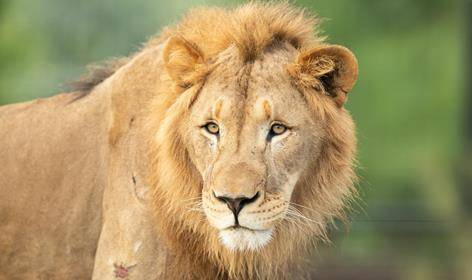
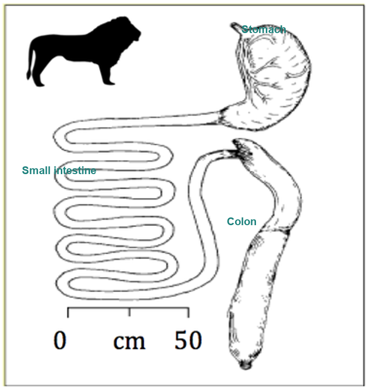

Built to eat big, then not eat for days.
Lions live across the grasslands, savannas, and open woodlands of sub-Saharan Africa, and they're probably the most recognizable big cat there is. What actually sets them apart from other cats isn't how they look, it's how they live. Lions form prides, tight social groups where everyone pitches in to hunt, defend territory, and raise cubs together. As apex predators, they're doing more than just eating well: they help keep the whole ecosystem balanced by controlling how many prey animals are around.
A lion's menu is basically anything big enough to be worth the effort: zebras, wildebeest, buffalo, antelope. Pride members often hunt together, which lets them take down animals no single lion could handle alone. The toolkit is straightforward: sharp retractable claws for grabbing and holding on, a powerful bite from those long canines, and a rough tongue covered in backward-facing papillae that strips meat clean off bone. After a good hunt, a lion can put away an enormous amount of meat in one sitting, and that single fact explains almost everything about how it's classified below.
Because one kill can feed a lion for days, it doesn't need to eat constantly. It's a discontinuous feeder, the opposite of a grazing herbivore that has to keep eating just to stay afloat. Lions are carnivores through and through, and their hunting style (cooperative, opportunistic, built around one big payoff) lines up perfectly with that discontinuous pattern. Everything about how they eat traces back to being built to process protein and fat in bulk, then coast until the next opportunity shows up.
Getting food down starts with the claws and teeth: retractable claws for grabbing prey, long canines for the kill, carnassial teeth built for slicing meat rather than grinding it, and that rough tongue for stripping flesh off bone.

Traced gut of an adult lion, stomach, small intestine, and colon, drawn to scale.
Inside, a lion's stomach is monogastric, a single chamber built for meat, not plants. There's essentially no fermentation happening in there, and there doesn't need to be. Without plant fiber to break down, a lion's gut stays short and just focuses on digesting protein and fat quickly. Like most cats, lions do have a cecum, but it's tiny and doesn't really do anything, and their colon is short and unsacculated rather than the big fermentation chamber you'd find in an herbivore.